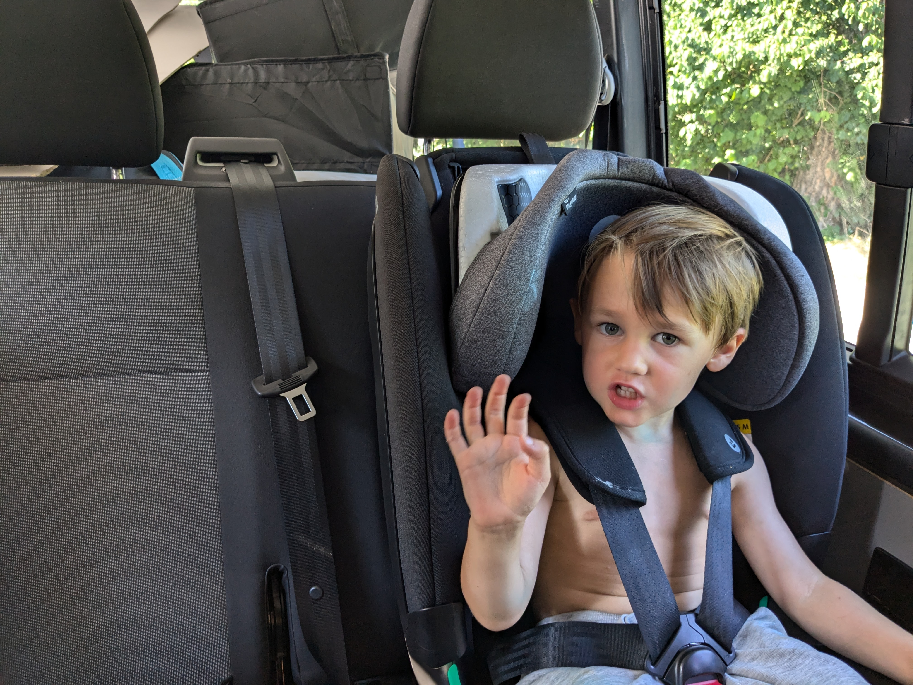
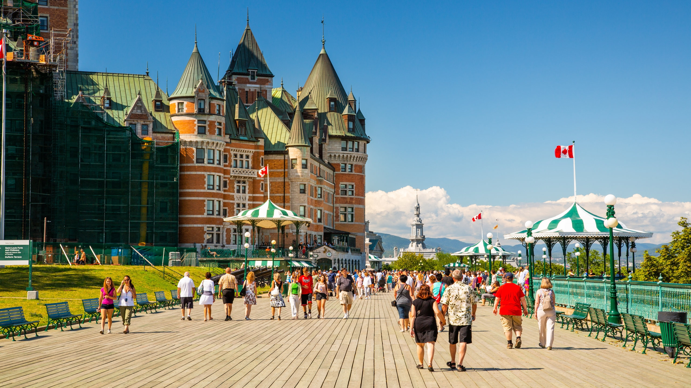
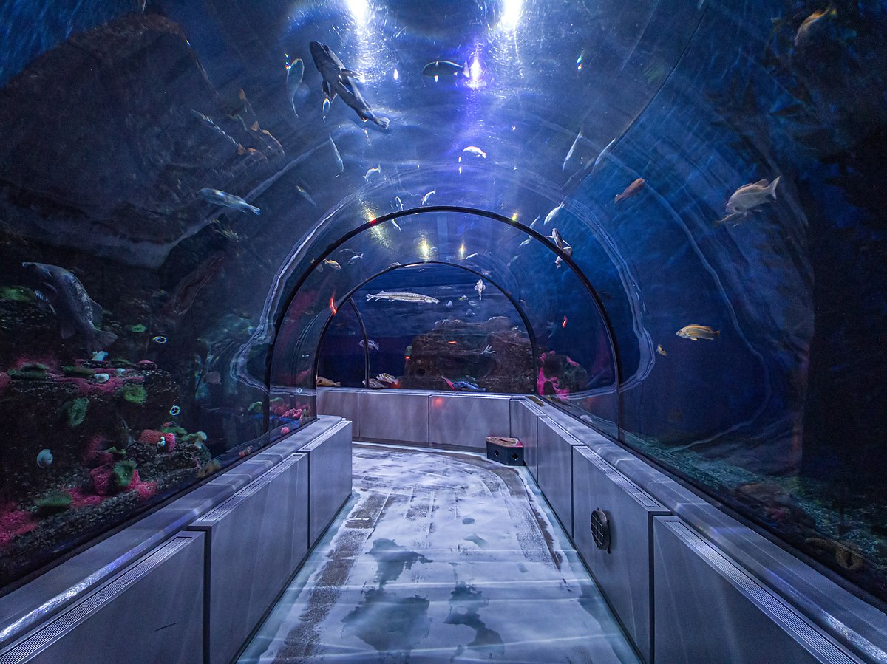
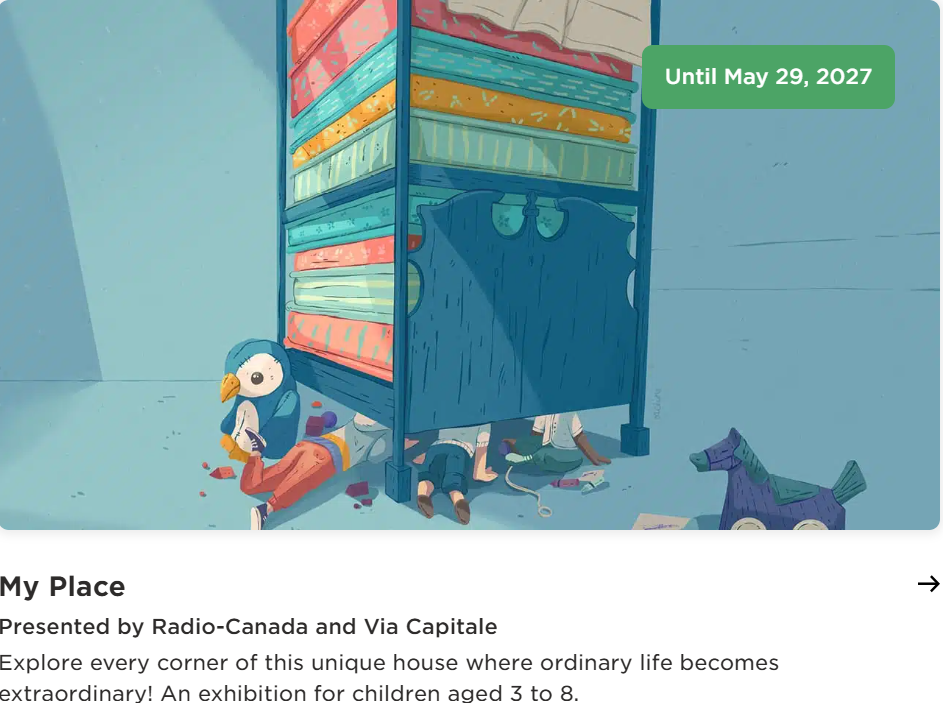
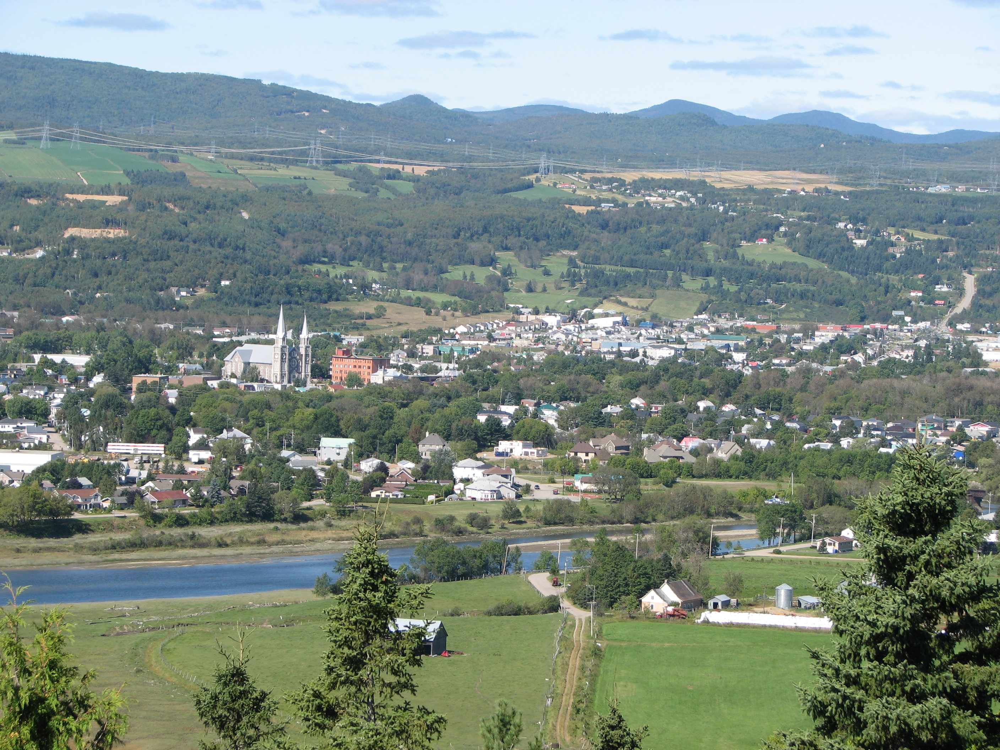
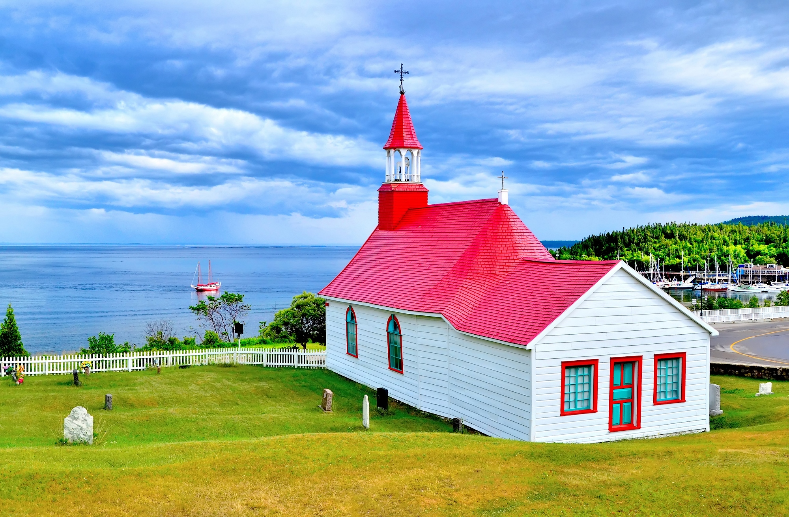
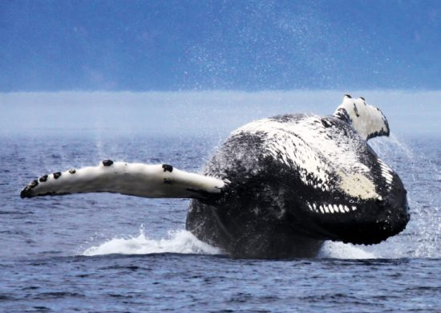

Familien-Roadtrip nach Québec
9 Tage Abenteuer mit Leon und Emil
By Paul Hoffmann in Reisen
August 27, 2025
Familien-Roadtrip nach Québec
9 Tage Abenteuer mit Leon und Emil. Unser Ziel: Kultur, Natur und viel Platz zum Spielen, ohne zu lange Autofahrten.
Route: Fredericton → Rivière-du-Loup → Québec City → Baie-Saint-Paul → Tadoussac → Rückfahrt
Tag 1 – Sonntag, 31. August
Abfahrt Fredericton Richtung Rivière-du-Loup (ca. 5,5 h). Stopp an den Grand Falls Gorge — Wasserfall und kurze Wanderung. Abends Spaziergang im Parc de la Pointe.

Tag 2 – Montag, 1. September
Fahrt nach Québec City (ca. 2,5 h). Nachmittags Altstadt bummeln: Petit Champlain, Place Royale. Abends auf der Dufferin Terrace — Promenade und Eis essen 🍦

Tag 3 – Dienstag, 2. September
Aquarium du Québec 🐟 und nachmittags Parc de la Chute-Montmorency mit Seilbahn und Hängebrücke.

Tag 4 – Mittwoch, 3. September
Musée de la civilisation — interaktive Ausstellungen, perfekt für Kinder. Nachmittags Plains of Abraham und Citadelle.

Tag 5 – Donnerstag, 4. September
Freier Vormittag, dann Abfahrt nach Baie-Saint-Paul (ca. 1 h). Spaziergang durch das kleine Künstlerstädtchen.

Tag 6 – Freitag, 5. September
Train de Charlevoix 🚂 von Baie-Saint-Paul nach La Malbaie. Nachmittags Weiterfahrt nach Tadoussac.

Tag 7 – Samstag, 6. September
Marine Mammal Interpretation Centre und nachmittags Whale Watching Tour — ca. 3 Stunden auf dem Wasser 🐋. Abends zu den Sanddünen.

Tag 8 – Sonntag, 7. September
Fähre Saint-Siméon → Rivière-du-Loup ⛴️, dann weiter bis Edmundston. Stopp im New Brunswick Botanical Garden 🌸

Tag 9 – Montag, 8. September
Rückfahrt Edmundston → Fredericton (ca. 3,5 h). Ankunft am Nachmittag.
Fazit
Eine unvergessliche Familienreise. Beeindruckende Naturwunder, spannende Aktivitäten für Kinder und die kulinarischen Highlights Québecs — diese Route bietet eine perfekte Mischung aus Abenteuer und Entspannung.